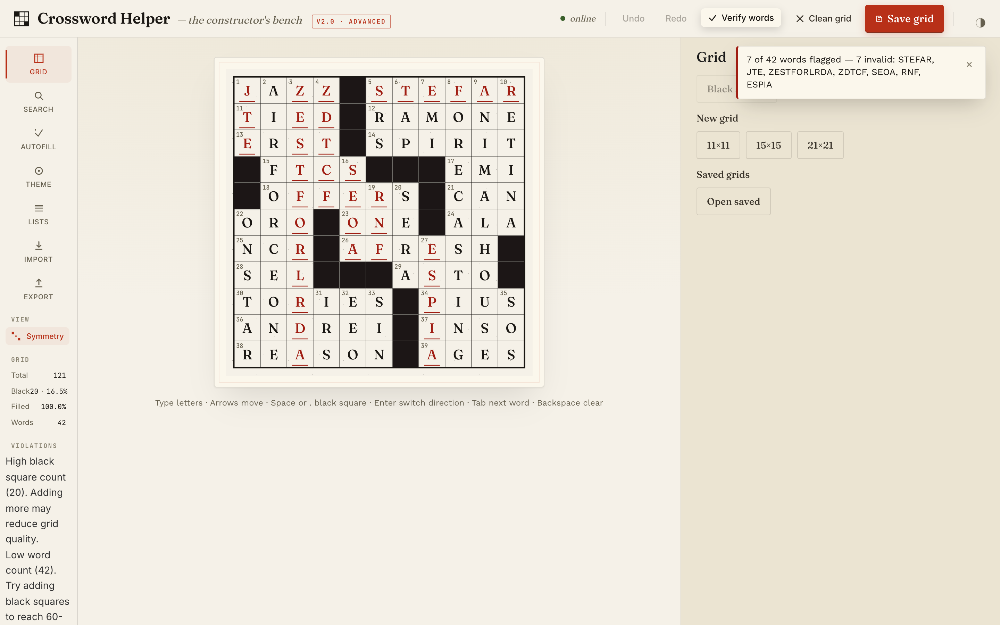
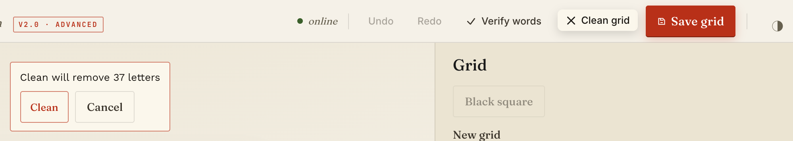

Check and clean a grid
Goal
Find the entries in your grid that are not valid words, and remove the letters that make them invalid without losing the good words around them. Use this after an autofill, or any time you have typed a lot by hand.
Prerequisites
- A grid with some letters in it (Autofill a grid or typing by hand).
- The app is online (the top-bar status reads
online); both buttons are disabled when the backend is offline.
Steps
1. Verify the words
Click Verify words in the top bar. The app checks every slot against the shipped Comprehensive Dictionary word list:
- A completely filled slot is invalid if that exact word is not in the list.
- A partly filled slot is unfillable if no word in the list fits the letters you have.
- An empty slot is skipped.
If everything passes, a message reads All N words valid!. Otherwise it reads, for example,
7 of 42 words flagged — 7 invalid: STEFAR, ITKINS, …, and unfillable slots are listed too, with _ for
each blank. The letters of flagged words turn red on the grid.


Verify checks against the shipped Comprehensive Dictionary only, not against word lists you uploaded. A word that
exists only in your own list is flagged as invalid.
2. Clean the grid
Click Clean grid. It clears exactly the squares Verify marks red, except theme-locked squares, which it
never blanks. Before it removes any letters, the app asks Clean will remove N letters. Click Clean to
go ahead or Cancel to leave the grid as it is. Undo reverses a clean in one step.


If there is nothing to remove, you get a message instead: Grid is clean — all words are valid!, or
Nothing removed: theme-locked letters are kept. when the only flagged letters are locked.
A word that crosses a cleared square is left partly filled, not removed. Autofill is what puts letters back.

3. Verify again
Run Verify words once more to refresh the red marks. After a clean, red marks can remain on words that
crossed a removed word until you verify again.
Final Result
Verify words reports All N words valid!, or the only flagged entries are ones you have chosen to keep.
Known problems
The count in the toast after a clean can be larger than the number of squares actually emptied, because it counts locked letters that clean keeps; the confirm's count is the right one. Both this and the stale red marks are listed under "Known Limitations" in the README.
Next Steps
- Fill the cleared squares again: Autofill a grid.
- Where the buttons are: Web app reference.